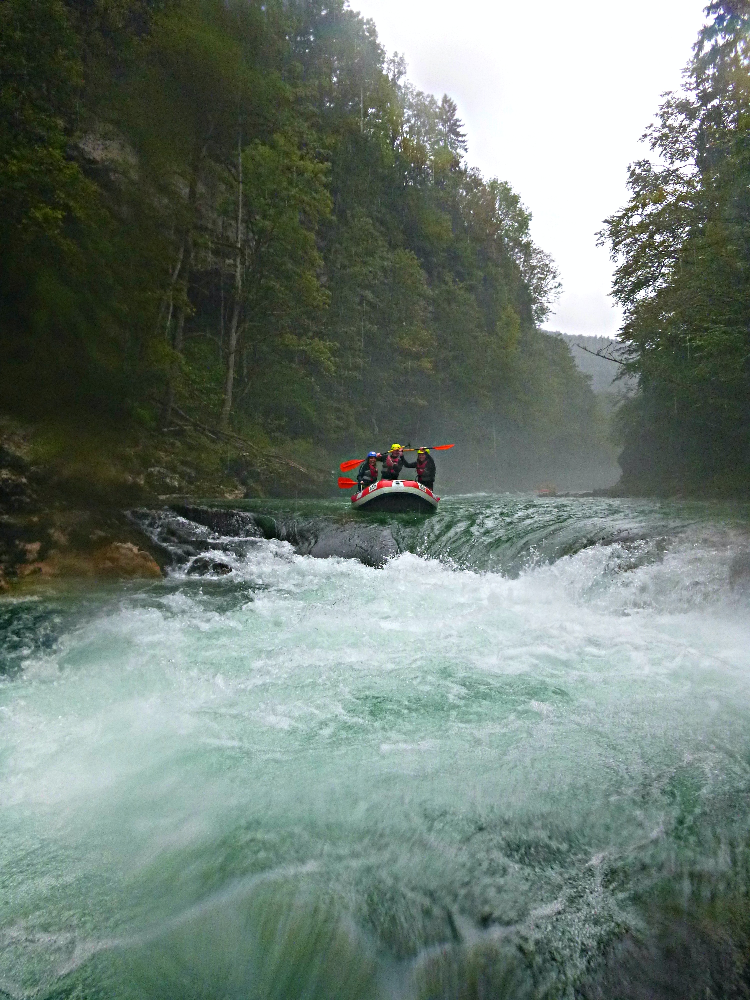
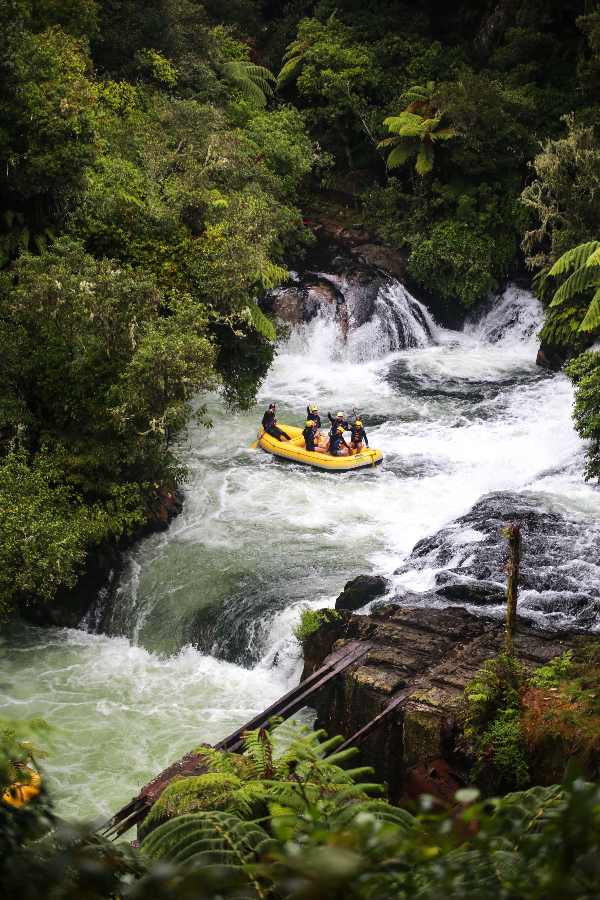

Please contact us for information regarding our trips!
Contact |
First, our beginner trail! This trail is perfect for beginners, younger adventurers, and family outings. The trail goes through the forest with beautiful sights with one small drop that everyone can have fun with. Our beginner trail takes about 2 hours to complete, so we have multiple time slots available throughout the day. |
|  | Next, our intermediate trail! This trail is rougher than the beginner trail. We suggest you only book this trail if you have been rafting before and if you are at least 14 years old. This trail features some rapids that take a moderate amount of experience to navigate. This trail takes about 4 hours to complete, so we offer 2 time slots per day. |
|  | Finally, our pro trail! This trail is very rough. All guests going on this must be at least 18 years old with about 3 years of constant rafting to participate. This trail is the only one that includes a mentor group to raft in front of you to demonstrate how to navigate this trail. Our pro trail takes 6 hours to complete, so we only have 1 time slot per day. You will need to reach out directly to us if you are planning to take this trail so we can provide all the safety precautions prior to booking. |
| Please contact us If you are considering our pro trail: Contact | |
|---|---|